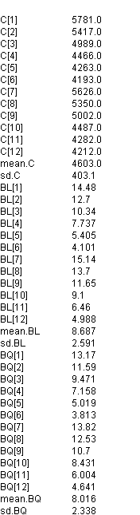

![[hips10]](hips10.bmp) Hips model 1: Closed form
Hips model 1: Closed formestimates for each strata - give results for "exact" columns
in Table 2
Spiegelhalter, D.J. and Best, N.G. “Bayesian approaches to multiple sources of evidence and uncertainty in complex cost-effectiveness modelling”. Statistics in Medicine 22 , (2003), 3687-3709.
No updates are required for this model; just load data and compile, then obtain values for C, mean.C, sd.C, BL, mean.BL, sd.BL, BQ, mean.BQ and sd.BQ using the node tool from the Info menu.
model {
for(k in 1 : K) { # loop over strata
# Cost and benefit equations in closed form:
####################################
# Costs
for(t in 1 : N) {
ct[k, t] <- inprod(pi[k, t, ], c[]) / pow((1 + delta.c), t - 1)
}
C[k] <- C0 + sum(ct[k, ])
# Benefits - life expectancy
for(t in 1:N) {
blt[k, t] <- inprod(pi[k, t, ], bl[]) / pow((1 + delta.b), t - 1)
}
BL[k] <- sum(blt[k, ])
# Benefits - QALYs
for(t in 1 : N) {
bqt[k, t] <- inprod(pi[k,t, ], bq[]) / pow((1 + delta.b), t - 1)
}
BQ[k] <- sum(bqt[k, ])
# Markov model probabilities:
#######################
# Transition matrix
for(t in 2 : N) {
Lambda[k, t, 1, 1] <- 1 - gamma[k, t] - lambda[k, t]
Lambda[k, t, 1, 2] <- gamma[k, t] * lambda.op
Lambda[k, t, 1, 3] <- gamma[k, t] * (1 - lambda.op)
Lambda[k, t, 1, 4] <- 0
Lambda[k, t, 1, 5] <- lambda[k, t]
Lambda[k, t, 2, 1] <- 0
Lambda[k, t, 2, 2] <- 0
Lambda[k, t, 2, 3] <- 0
Lambda[k, t, 2, 4] <- 0
Lambda[k, t, 2, 5] <- 1
Lambda[k, t, 3, 1] <- 0
Lambda[k, t, 3, 2] <- 0
Lambda[k, t, 3, 3] <- 0
Lambda[k, t, 3, 4] <- 1 - lambda[k, t]
Lambda[k, t, 3, 5] <- lambda[k, t]
Lambda[k, t, 4, 1] <- 0
Lambda[k, t, 4, 2] <- rho * lambda.op
Lambda[k, t, 4, 3] <- rho * (1 - lambda.op)
Lambda[k, t, 4, 4] <- 1 - rho - lambda[k, t]
Lambda[k, t, 4, 5] <- lambda[k,t]
Lambda[k, t, 5, 1] <- 0
Lambda[k, t, 5, 2] <- 0
Lambda[k, t, 5, 3] <- 0
Lambda[k, t, 5, 4] <- 0
Lambda[k, t, 5, 5] <- 1
gamma[k, t] <- h[k] * (t - 1)
}
# Marginal probability of being in each state at time 1
pi[k,1,1] <- 1 - lambda.op pi[k,1, 2]<-0 pi[k,1,3] <- 0
pi[k,1, 4] <- 0 pi[k,1, 5] <- lambda.op
# Marginal probability of being in each state at time t>1
for(t in 2:N) {
for(s in 1:S) {
pi[k, t, s] <- inprod(pi[k, t - 1, ], Lambda[k, t, , s])
}
}
}
# Mean and sd of costs and benefits over strata
#######################################
mean.C <- inprod(p.strata[], C[])
for(k in 1:12) {
dev.C[k] <- pow(C[k] - mean.C, 2)
}
var.C <- inprod(p.strata[], dev.C[])
sd.C <- sqrt(var.C)
mean.BL <- inprod(p.strata[], BL[])
for(k in 1:12) {
dev.BL[k] <- pow(BL[k] - mean.BL, 2)
}
var.BL <- inprod(p.strata[], dev.BL[])
sd.BL <- sqrt(var.BL)
mean.BQ <- inprod(p.strata[], BQ[])
for(k in 1:12) {
dev.BQ[k] <- pow(BQ[k] - mean.BQ, 2)
}
var.BQ <- inprod(p.strata[], dev.BQ[])
sd.BQ <- sqrt(var.BQ)
}
Data ( click to open )
Results
